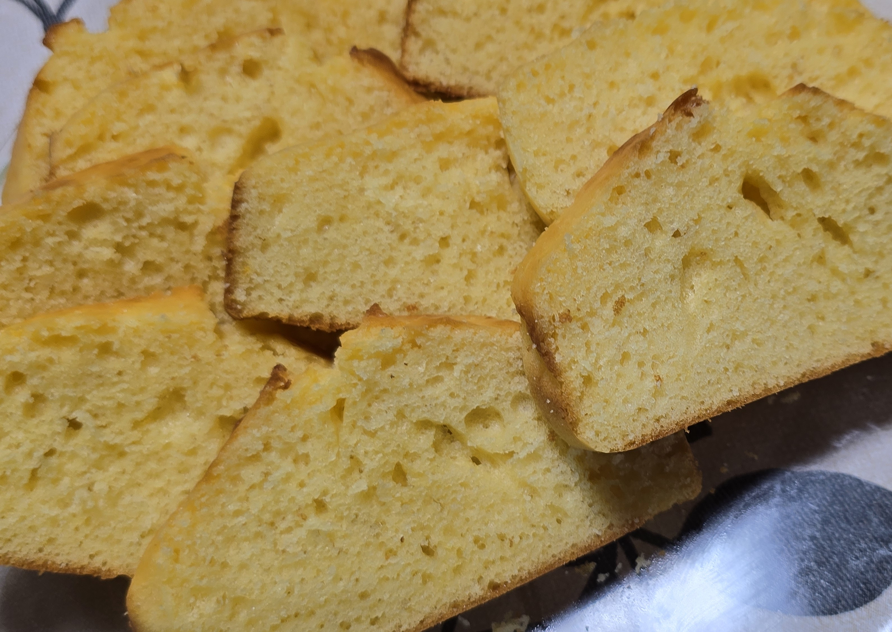
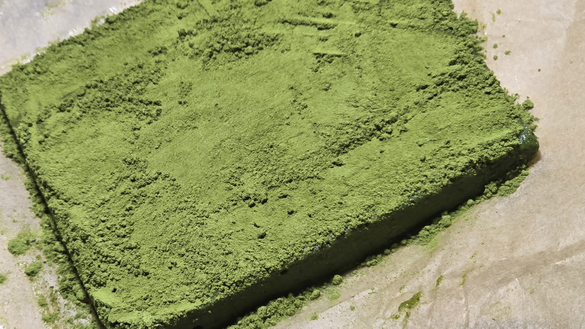
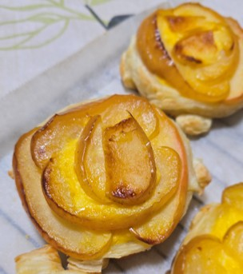
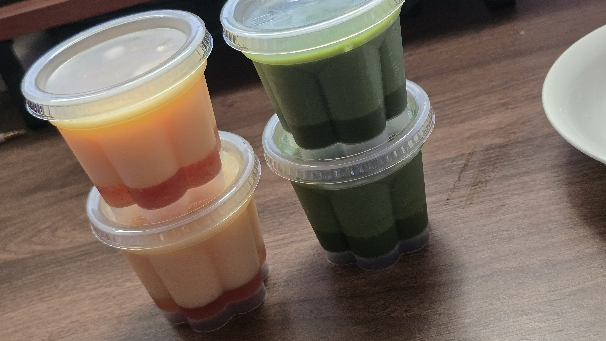

生チョコ編
みなさん、こんにちは2班GAしゅがーこと佐藤颯太です！
GWいかがお過ごしでしょうか？僕は連日お菓子作りをしています笑
今回は僕の趣味であるお菓子作りを動画にしました！どうぞご覧ください。
どうでしたか？ちなみに今回動画編集で使ったのは第6回の選択制で使う動画アプリClipchampを使いました！
動画内でも一部お見せしましたが、いつもはクッキーやアップルパイなど他にもたくさんのお菓子を作って、親や友達にプレゼントしたりしています。この金曜1コマのスタッフにも抹茶のパウンドケーキや生チョコをプレゼントしました😄😄生協から許可が出てればしっかり、手袋つけて焼いたクッキーをみなさんにもあげようかなと思ったりしています🤔
ところで、最近は物価の上昇やばくないですか？まあ、秋田はみなさんの地元と比べれば安いかもしれませんが、秋田で生まれ育った僕としては物価の高騰をひしひしと感じています。😣😣特に最近はお菓子作りをするのにもお金がかかる世の中になってきました。最近の僕のお給料の3～4割くらいはお菓子作りに溶けている気がします。🫠🫠🫠
チョコだけにってね笑…失礼しました＜(＿ ＿)＞
さて、おふざけはこの辺にして、みなさんは好きなお菓子がありますか笑？後で僕に好きなお菓子を教えてください！！もしかすると作っちゃうかもです。ちなみに僕はアップルパイが大好きです😍去年の秋にはリンゴを使ってよくアップルパイを作っていたのですが、今はリンゴの季節ではないので早くリンゴの季節になってほしいなと思っている今日この頃です🍎🍎
最後に僕の今までのコレクションを載せて終わりにします！
それでは講座で、またお会いしましょう！👋👋



